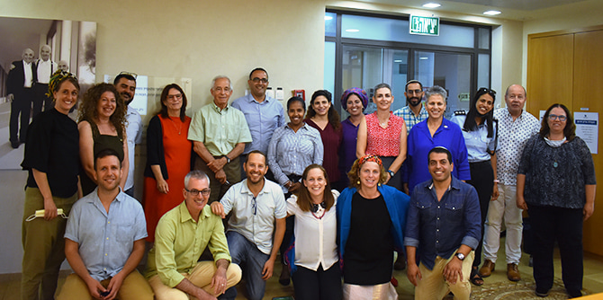

לפגישה עם פרופ' יהודה ריינהרץ קדמו שבועיים קשים של מלחמה באזור – חוויה שטלטלה באופנים שונים כל אחת ואחד מעמיתי התוכנית. העמיתים, העוסקים במגוון תחומי חברה וקהילה בחמש רשויות במרחב עוטף עזה, התמודדו בימי מבצע "שומר החומות" עם מציאות חירום מורכבת אשר משפיעה על חייהם במישור האישי, הקהילתי והמקצועי.
את המפגש, שהתקיים בדיוק ביום שבו חזרה הקבוצה להיפגש פנים אל פנים במרכז מנדל למנהיגות בנגב, פתחה ד"ר עדי ניר שגיא, מנהלת המרכז, בתיאור כללי של מטרותיו. אחריה תיארה ד"ר רותם ברסלר גונן, מנהלת התוכנית, את הדגשים והעקרונות המנחים בשנת הלימודים הראשונה בתוכנית.
לאחר מכן הציגו משתתפי התוכנית את תחומי פעילותם ואת השינויים המתבקשים בתחומים אלו בנגב המערבי. חוויות הימים הקשים שקבוצת עוטף עזה עברה לא מכבר עלו כרקע לכל השיחות. העמיתים סיפרו על הרקע המקצועי שלהם, ובמיוחד על התפקידים שהם ממלאים בזמני חירום: עובדי רווחה ועובדים בתחומי נוער ובריאות, שכולם מגויסים לעשייה מנהיגותית משמעותית בעת משבר – עשייה המבטאת מחויבות עמוקה לסייע לאוכלוסייה בדרכים עוצמתיות וייחודיות.
קינחנו את המפגש בדברים קצרים מפי ד"ר גילי זיוון, חברת סגל בתוכנית, שסיפרה על הלימוד הבית-מדרשי הפותח כל יום מפגש בתוכנית עוטף עזה, תוך התמקדות בשאלות של מנהיגות דרך דמותו של משה.
השיח הקבוצתי עם פרופ' ריינהרץ היה משמעותי מאוד עבור העמיתים דווקא בעת הזאת, בכך שהוא סיפק הזדמנות להנכיח את הפעולות השונות שלהם במרחב הגאוגרפי ברשויות השונות – שדרות, שער הנגב, אשכול, חוף אשקלון ושדות נגב. פעולות אלו יוצרות יחד השפעה אזורית המשקפת ראייה מנהיגותית כלל-אזורית שמטרתה לשפר את איכות חייהם של תושבי עוטף עזה. בעיניהם, זוהי ציונות של המאה ה-21.
פרופ' ריינהרץ, שלא חווה את חיי היומיום בנגב המערבי, גילה עניין רב בדברי העמיתים, שאל וביקש להבין לעומקם מושגים כמו "צח"י" (צוות חירום יישובי), פוסט-טראומה המאפיינת ילדים באזור, ועוד. אף שברקע השיחה הערה עמדה החוויה הקשה של סבב הלחימה האחרון, האווירה הייתה אופטימית ומלאת תקווה.
המפגש הדגיש את החשיבות הרבה של תוכנית מנדל למנהיגות בעוטף עזה כמסגרת רעיונית מעמיקה, המסייעת לחשיבה, ללמידה ולעשייה של הכוח המנהיגותי של העמיתים – תמיד, ובוודאי בחירום.

{kind=link}
{kind=link}